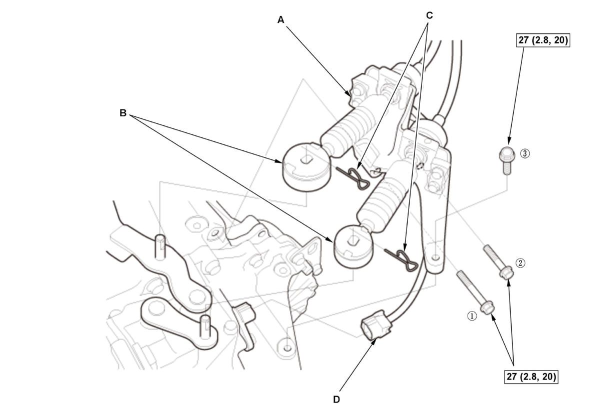
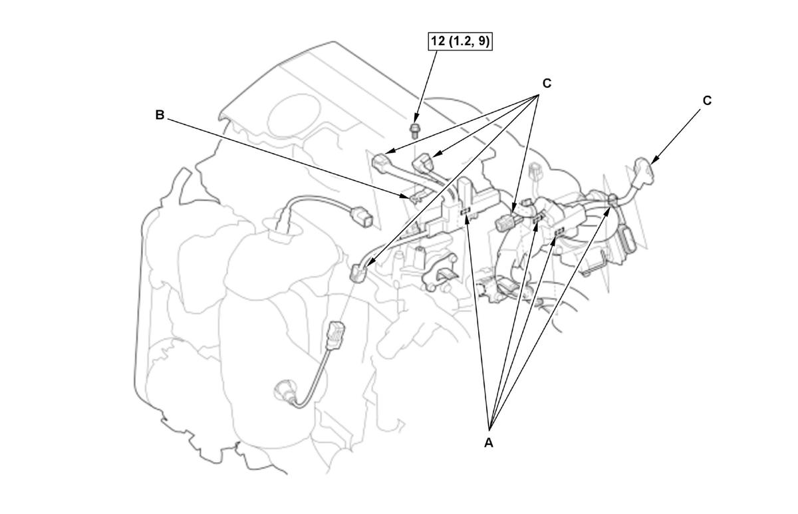
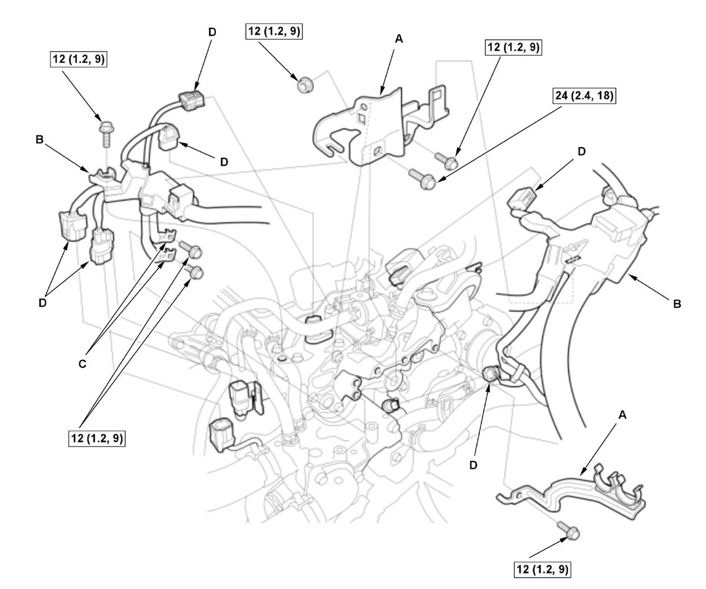
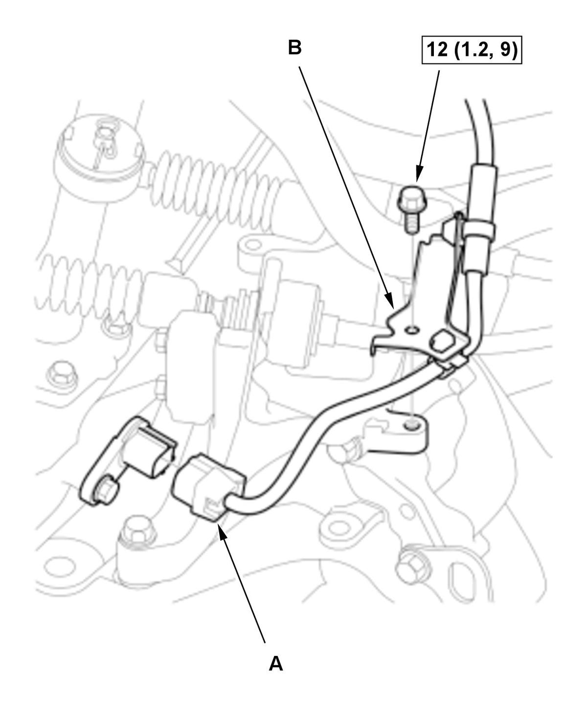
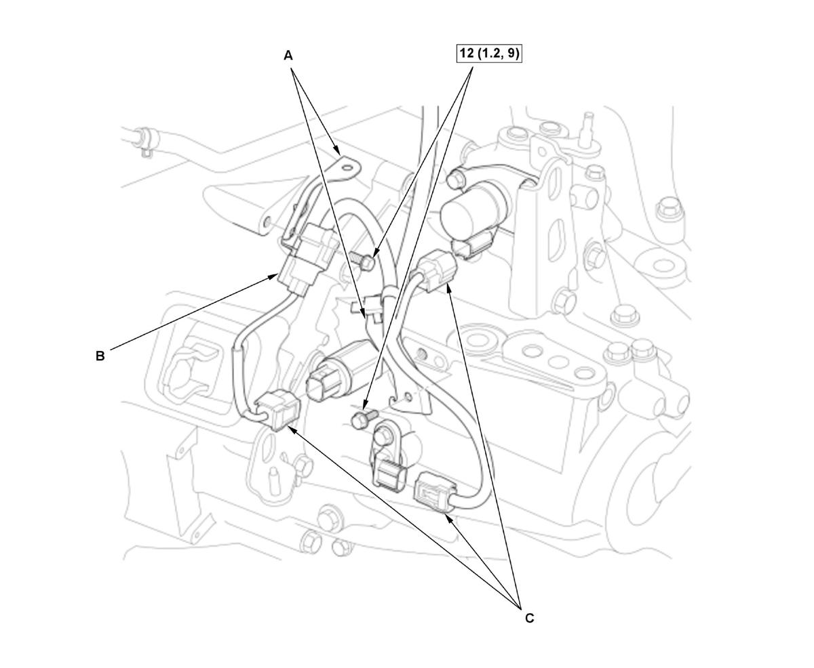
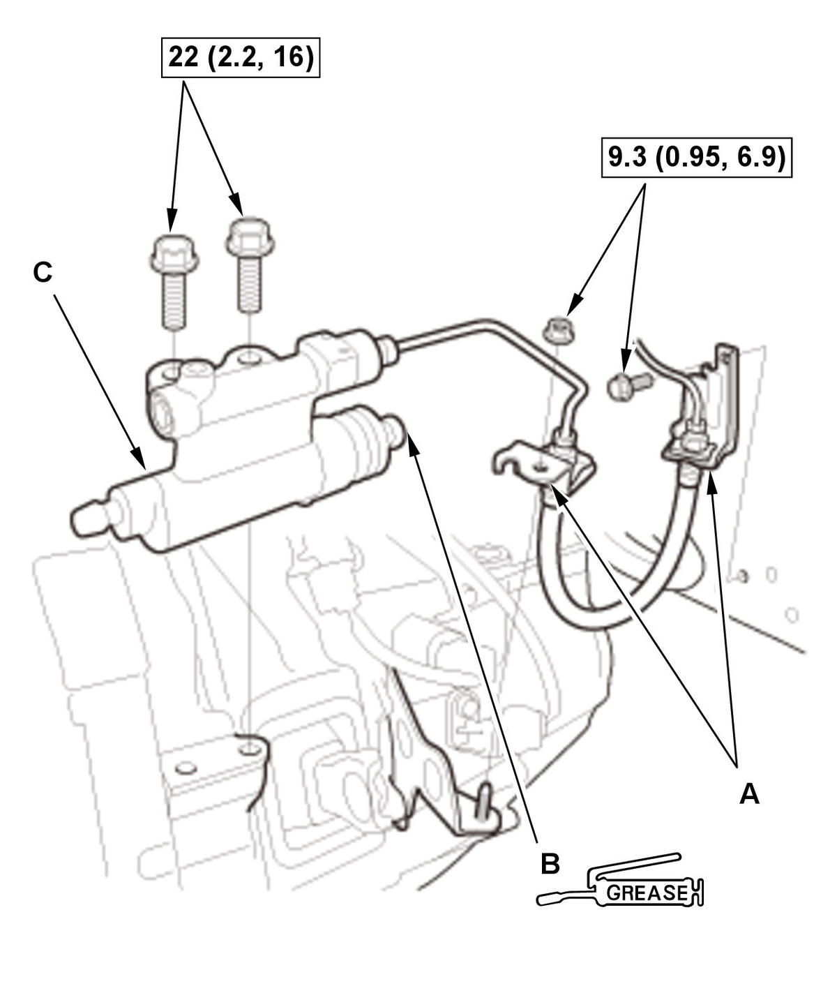

Manual Transmission Removal and Installation (Except K20C1 (M/T)): Installation
NOTE:
- How to read the torque specifications .
- Use fender covers to avoid damaging painted surfaces.
- Release Bearing - Check
1. Check the release bearing, then install the release bearing and the release fork with specified grease . - Transmission - Install
1. Make sure the two dowel pins are undamaged and installed in prescribed holes on the clutch housing as shown. Replace the dowel pins if they are damaged. NOTE: Refer to the Exploded View as needed during this procedure.
2. Place the transmission on the transmission jack, and raise it to the engine level.
3. Align the transmission mainshaft and the clutch pressure plate.
4. Move the transmission inward until there is no clearance between the transmission housing and the engine block.
- Lower Transmission Assembly Mounting Bolt - Install
NOTE: Refer to the Exploded View as needed during this procedure.
- Intermediate Shaft - Install (With Intermediate Shaft)
- Driveshaft Inboard Joint - Connect (Both Sides)
- Clutch Cover - Install
- Intake Air Resonator - Install
- Front Subframe - Install
1. Set the subframe adapter (VSB02C000016) on a transmission jack (A), line up the slots in the arms with the bolt holes on the corner of the jack base, and tighten the bolts. 2. Attach the subframe adapter to the front subframe (B).
- Torque Rod Mounting Bolt - Loosely Install
- Front Brace - Install
- Lower Arm Mounting Bolt - Install (Both Sides)
- Lower Arm Ball Joint - Connect (Both Sides)
- Lower Stabilizer Link Ball Joint - Connect (Both Sides)
- Tie-Rod End Ball Joint - Connect (Both Sides)
- Connector (EPS Subharness) - Connect
- Exhaust Pipe A - Install
- Front Floor Brace - Install (With Front Floor Brace)
- Vehicle - Lift Down
- Transmission Mount - Loosely Install
- Upper Transmission Assembly Mounting Bolt - Install
NOTE: Refer to the Exploded View as needed during this procedure.
- Engine Support Hanger - Remove
1. Remove the engine support hanger. 2. Remove the universal lifting eyelet.
3. Install the front damper caps.
- Engine/Transmission Mount - Tightening Procedure
- Intake Manifold Bracket - Install (1.5L Engine)
- Change Wire Bracket - Install
1. Install the change wire bracket with the change wires (A).
NOTE:
- Do not wipe off the grease of the change wire ends (B).
- Tighten the bolts in the numbered sequence shown to the specified torque.
Fig 3: Change Wire Bracket Components With Tightening Sequence And Torque Specifications (Except K20C1 - M/T)
Courtesy of HONDA, U.S.A., INC.2. Install the lock pins (C).
3. Connect the connector (D).
4. Check that the transmission shifts into all gears smoothly.
- Engine Wire Harness (Engine Side) - Install (2.0L Engine)
1. Install the harness clamps (A).
Fig 4: Engine Wire Harness (Engine Side) Components With Torque Specifications (2.0L Engine - Except K20C1 - M/T)
Courtesy of HONDA, U.S.A., INC.2. Install the ground cable (B).
3. Connect the connectors (C).
- Engine Wire Harness (Engine Side) - Install (1.5L Engine)
1. Install the harness brackets (A) and the harness covers (B).
Fig 5: Exploded View Of Engine Wire Harness (Engine Side) Components With Torque Specifications (1.5L Engine - Except K20C1 - M/T)
Courtesy of HONDA, U.S.A., INC.2. Install the ground cables (C).
3. Connect the connectors (D), and make sure they are fully seated.
- Engine Wire Harness (Transmission Side) - InstallFig 6: Engine Wire Harness (Transmission Side) Components With Torque Specifications (Except K20C1 - M/T) (1 Of 2)

Courtesy of HONDA, U.S.A., INC.1. Connect the connector (A). 2. Install the harness bracket (B).
3. Install the brackets (A).
Fig 7: Engine Wire Harness (Transmission Side) Components With Torque Specifications (Except K20C1 - M/T) (1 Of 2)
Courtesy of HONDA, U.S.A., INC.4. Install the connector (B) to the bracket.
5. Connect the connectors (C).
- EVAP Canister Purge Valve - Install (2.0L Engine)
- Intake Air Duct - Install
- Slave Cylinder - Install

Courtesy of HONDA, U.S.A., INC.1. Install the clutch line brackets (A). NOTE: Be careful not to bend the clutch line.
2. Apply a light coat of super high temp urea grease (P/N 08798-9002) to the push rod (B) of the slave cylinder (C).
3. Install the slave cylinder.
- Intake Air Duct F - Install (1.5L Engine)
- Intake Air Duct E - Install (1.5L Engine)
- 12 Volt Battery Base - Install
- 12 Volt Battery - Install
- Air Cleaner - Install
- Front Grille Cover - Install
- Steering Joint - Connect
- Transmission Fluid - Refill
- Vehicle - Lift Up
- Engine Undercover Lid - Install (With Engine Undercover Lid)
- Engine Undercover - Install
- Front Wheel - Install
- Vehicle - Lift Down
- Transmission Gear - Check
1. Check that the transmission shifts into all gears smoothly. - Wheel Alignment - Check
- VSA Sensor Neutral Position - Memorize
- Test Drive - Check